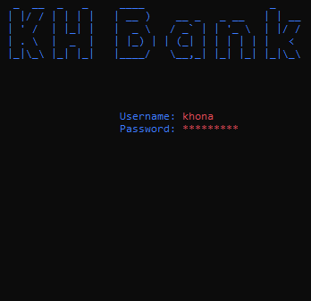
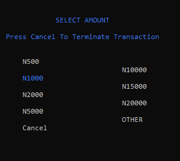
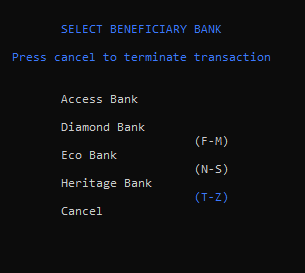

Projects
Bank ApplicationThe application carries out fundamental banking functions.Developed using C# and an MS SQL Database.The data access layer was crafted utilizing the ADO.NET Connected Layer. View CodeThe design of the menu utilized a NuGet package called Spectre Console. View Project |
 |
ATM ApplicationThis application conducts fundamental Automated Teller Machine (ATM) transactions.Developed using C# and an MS SQL Database.The data access layer was crafted utilizing the ADO.NET Connected Layer. View Code The design of the menu utilized a NuGet package called Spectre Console. View Project |
 |
 |
 |